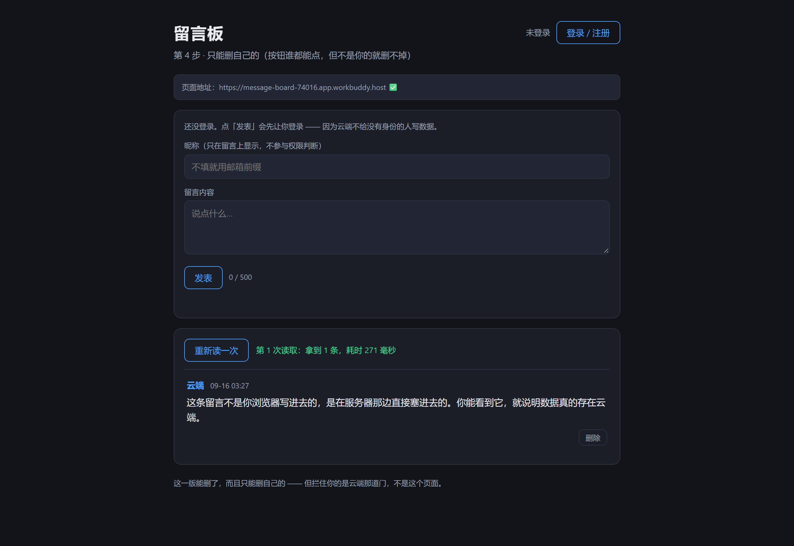
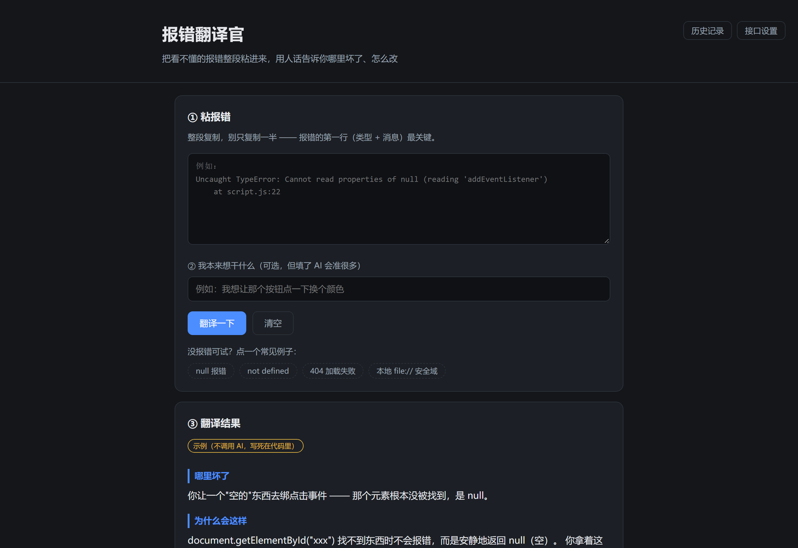
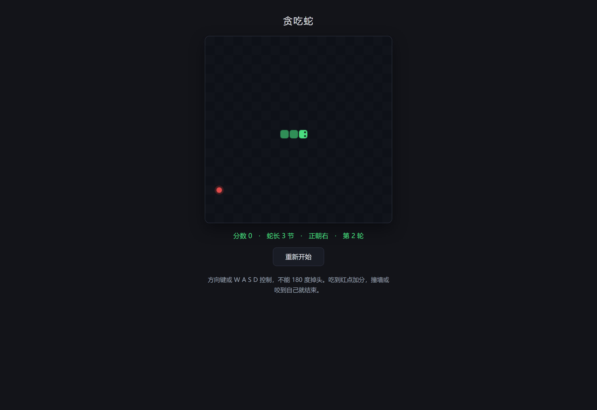
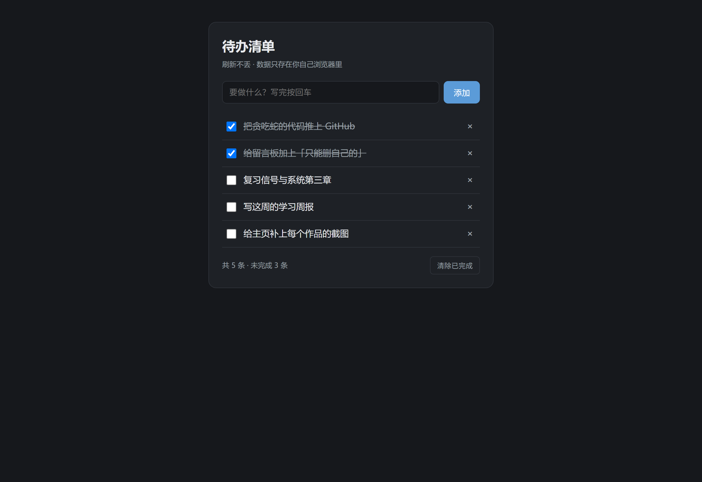
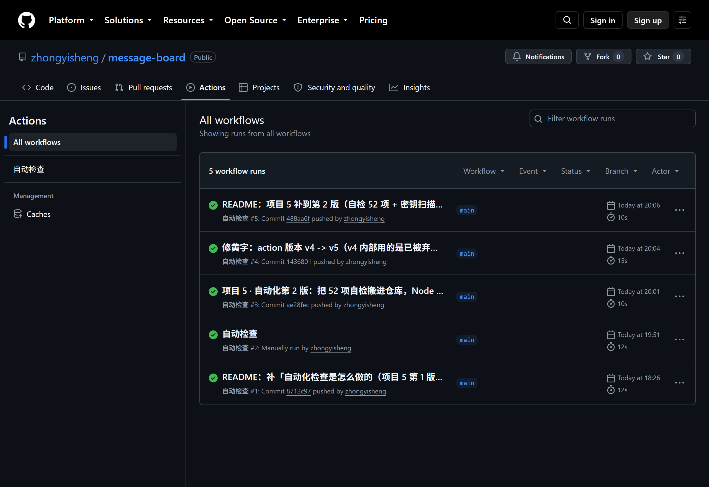

 留言板 有后端 能注册登录、发留言，数据存在云端，谁打开看到的都是同一份。 删除权限做在数据库那一层 —— 不是页面上把按钮藏起来，是别人的留言真的删不掉。 REST API PostgreSQL 用户认证 行级权限 RLS 打开看看 看代码
 报错翻译官 调 AI 把看不懂的报错整段粘进去，用人话说明哪里坏了、为什么会这样、怎么改。 网页直接调 AI 接口，地址和 Key 由使用者在页面上自己填，代码里不存任何密钥。 答案是边写边显示出来的，翻过的报错会留在历史记录里。 JavaScript 调用 AI 接口 流式响应 本地存储 打开看看 看代码
 贪吃蛇 小游戏 用 Canvas 从零写的网页小游戏：有计分、碰撞判定、能重新开始。 整块画布每秒重画八遍，从"一个会动的方块"一步步长成完整的游戏。 （用键盘玩，手机上玩不了。） JavaScript Canvas 游戏循环 状态管理 玩一局 看代码
 待办清单 能增、能删、能改、能打勾，数据存在浏览器本地，刷新不丢。 先有数据、再按数据重画页面 —— 这是后面所有项目都在用的同一套做法。 HTML / CSS JavaScript 本地存储 打开看看 看代码
 自动化检查 CI 给留言板仓库配的自动检查：每次推代码，GitHub 会借一台干净机器， 跑 52 项自检和密钥扫描，通过才给绿勾。这一步不需要人记得去做。 GitHub Actions YAML 持续集成 CI 看运行记录 看配置